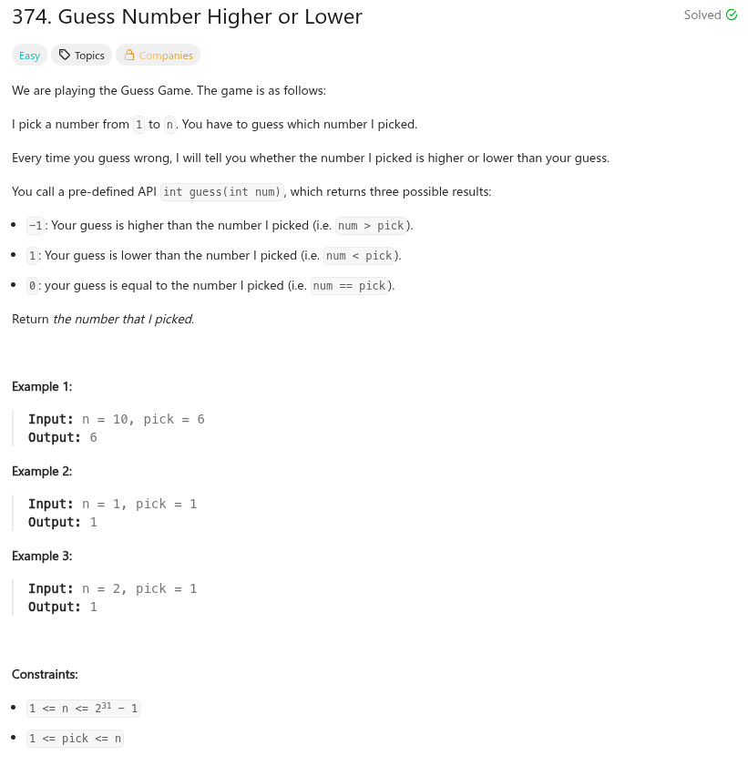

參考資訊：
https://www.cnblogs.com/grandyang/p/5666502.html
題目：

/**
* Forward declaration of guess API.
* @param num your guess
* @return -1 if num is higher than the picked number
* 1 if num is lower than the picked number
* otherwise return 0
* int guess(int num);
*/
int guess(int num);
int guessNumber(int n)
{
int r = 0;
int m = 0;
int left = 0;
int right = n;
while (left < right) {
m = left + ((right - left) >> 1);
r = guess(m);
if (r > 0) {
left = m + 1;
}
else if (r < 0) {
right = m;
}
else {
return m;
}
}
return left;
}